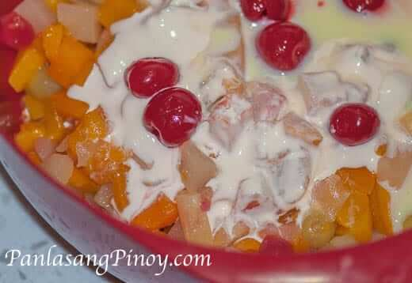

Source:https://panlasangpinoy.com/pinoy-fruit-salad-recipe/
Fruit Salad is occasionally served during Christmas and sometimes birthdays too. For it being a festive dish, fruit salad is also nutritious and refreshing to consume. It's also sweet and creamy, it also contains colorful and assorted fruits. Fruit Salad usually contains thick milk, apples, grapes, and mandarin oranges; others even add corn kernels and tapioca pearls while others add more canned fruits like peaches and lychees. For Filipinos to achieve this dessert is to buy fruit cocktail, sweetened condensed milk, and cream, add some mix and refrigerate it. After that you have achieved one of the most favorite Filipino dessert.

Owned by UMAK and multiple individuals, please do not steal or share this website